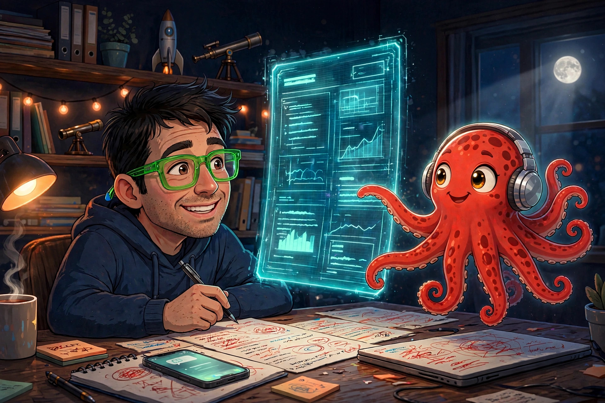

Honed Signal
No hype. No noise.
Factual videos and reports on markets, tech, AI, and space.
Watch on YouTube
Start here
New to Honed Signal? Start with the work itself — the latest reports, the free tools, and the scans. No signup, no hype.
Honed Reports · Oct 31, 2026
What AI Is Actually Doing to California's Music Economy
The verified record does not show AI measurably hollowing out California musicians' income or jobs — and the one alarming collapse in the federal payroll data turned out to be a bookkeeping change, confirmed by the state agency that owns the data. The record, sorted into documented, alleged, and unknown.
Read the report →
Honed Reports · October 2026
Should Meta Become a Publisher?
We asked five AI systems — including Meta's own — whether Meta should publish books, with no hint of why we were asking. The verdict was unanimous: 5–0 against. The report lays out the market math, the legal wall, and the two real-world experiments that already ran.
Read the report →
AI Tool Briefs · Ongoing
60 AI tools, briefed the same way
Every tool gets the same six questions, prices checked on the maker's own site, and a plain verdict: USE IT, TRACK IT, or SKIP IT. None has earned USE IT yet — the page says so, and shows the reasoning for every call.
Browse the briefs →
Honed Money · Free tools
268 free calculators
Budgeting, debt, housing, investing, retirement, taxes, and insurance — each one explains its math in plain English. No account, no signup, and not financial advice: the assumptions are printed on every page.
Open Honed Money →
Honed Flint · Honed Proof · Free tools
97 education tools, 33 health-cost tools
College costs, grades, and classroom planning from Honed Flint; what care actually costs — plans, HSAs, medical debt — from Honed Proof, graded against the evidence.
Flint → Proof →
The Scans · Free
Debt Scan & Site Scan
The Debt Scan shows what your minimum payments are really costing you — it runs on your device, so your numbers never leave it. The Site Scan grades any website's health in the open; it runs on this site daily, and the result is published either way.
Debt Scan → Site Scan →
About

Honed Signal is a one-person media project by Freddie Avalos producing factual, hype-free videos and reports on markets, technology, AI, and space. Every report is researched from primary sources and written in plain language. No hype. No noise.
Freddie works with Huxley, his AI research partner: Huxley digs through the primary sources and drafts; Freddie edits, verifies, and makes the calls.
Who’s who. Freddie Avalos is a human — the person behind Honed Signal. He edits, verifies, and is responsible for everything published here. Huxley is not a person: Huxley is the name Freddie gave his Muse assistant — Muse is Meta’s personal AI agent, powered by the Muse Wonder model. Huxley researches, drafts, and builds; Freddie makes the calls. (Meta AI, credited on some artwork and two videos, is a different Meta tool.)
Meet Rio →